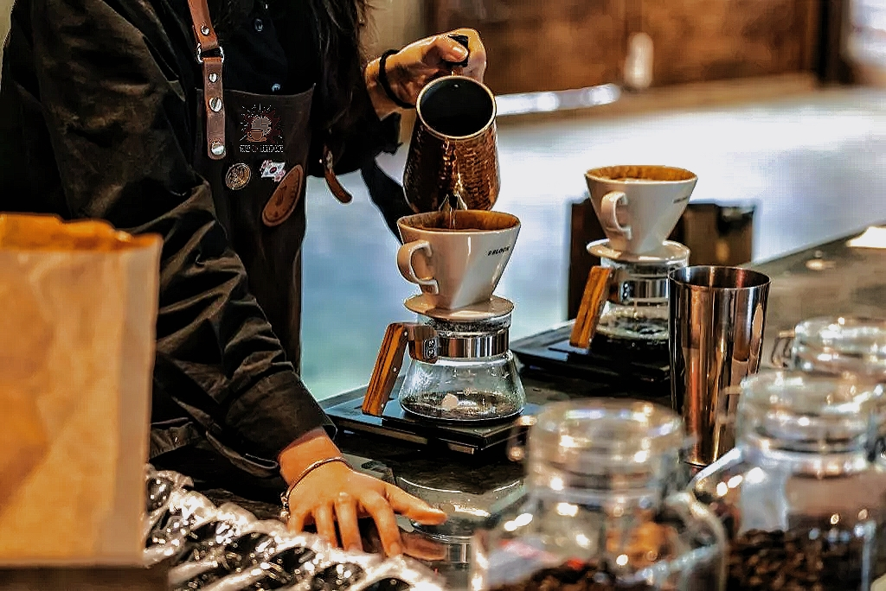
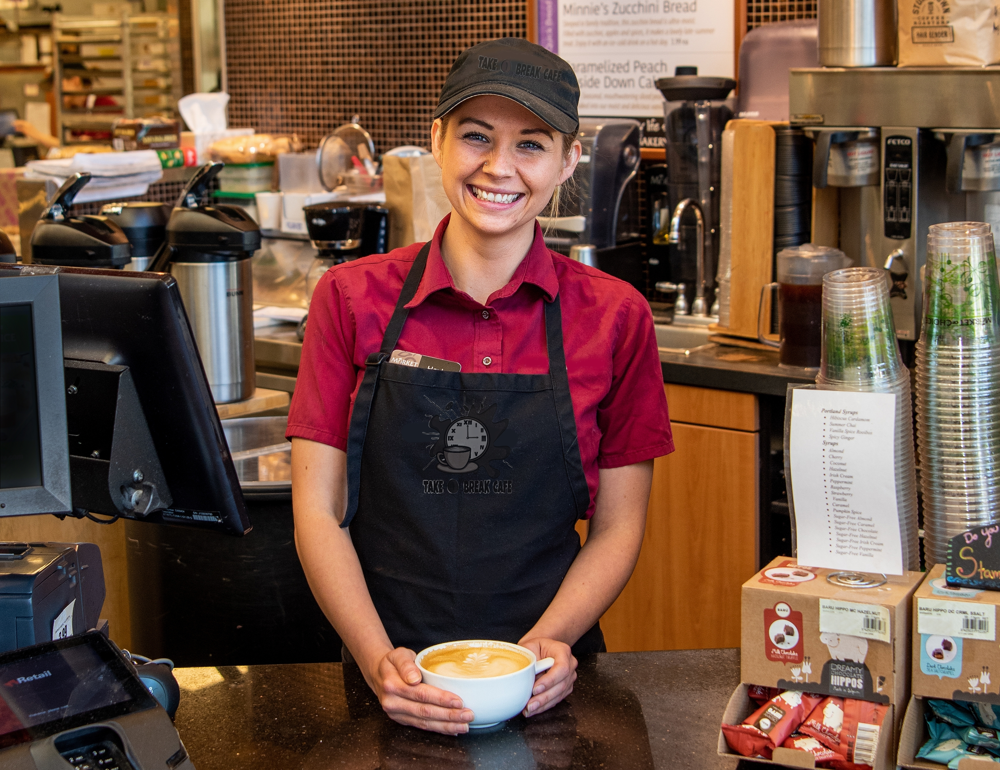

Step into a world of pure indulgence at Take A Break Cafe, where every visit is a mini-vacation for your senses. Located in
Setapak, our cafe is a tranquil oasis designed for those who crave a break from the ordinary. As you enter, you'll be embraced
by the cozy ambiance, where soft lighting and comfortable seating beckon you to unwind. At Take A Break Cafe, we're passionate about
the art of relaxation.
Our baristas craft each cup of coffee with precision, transforming your daily caffeine fix into a gourmet experience. Sip on our
velvety lattes or bold espressos while you savor the rich aroma that envelops you. Our menu is a symphony of flavors, featuring a
delectable assortment of pastries, sandwiches, and desserts that are as Instagram-worthy as they are delicious. From flaky waffle to
decadent cakes, every bite is a journey for your taste buds. But Take A Break Cafe isn't just a place; it's a destination. Whether
you're catching up with friends, enjoying a quiet moment with a book, or simply people-watching, our cafe is the perfect backdrop for
your special moments.
So why wait? Take a break from the ordinary and join us at Take A Break Cafe, where every visit is a delightful escape from the
daily grind.
Let Me Tell You The Story!

Take A Break Cafe was opend on Black Friday 2022(25th November 2022). In the area that fullfiled with young blood, "Take A
Break Cafe", a small and unassuming haven for weary souls seeking respite from their daily grind.
Mr. Kingstone, the cafe's welcoming owner, had a knack for making everyone feel at home. His cozy cafe was adorned with mismatched
chairs and the delightful aroma of fresh coffee.
One rainy afternoon, Victoria, a young woman juggling a mountain of tasks, stumbled upon the cafe's inviting signboard. She ordered a
cappuccino and nestled into a corner. The cafe's soothing atmosphere and the pattering rain outside soon transported her to a world of
tranquility. Week after week, Victoria returned to her newfound sanctuary. But she wasn't alone. The cafe's charm had a magnetic effect,
drawing in patrons seeking solace and connection. It became a place for first dates, heartfelt conversations, fighthing with assignment
and a quiet contemplation.
As time passed, "Take A Break Cafe" became a cherished retreat, known far and wide for its ability to transform simple moments into
cherished memories. It stood as a reminder that in life's fast pace, we all need a place to take a break and savor the sweetness of the
present. And so, the story of "Take A Break Cafe" continued, as a place where warmth, friendship, and the joy of living unfolded in
every cup of coffee served.
Let's Heard From Our Baristas~

As a barista at Take A Break Cafe, I have the privillege of serving our wonderful customers daily, and it's more than just a job,
it's an absolute joy. The cozy ambiance, the rich aroma of freshly brewed coffee, and the warm smiles on our customers' faces make every
day here a delight. Crafting each cup with care and precision is not just a duty, but a passion. It's a pleasure to be a part of a cafe
where people find solace and create beautiful memories. Take A Break Cafe is not just a place to work; it's a place that feels like home,
and that's something truly special.
Working at Take A Break Cafe is like being part of a close-knit family. The camaraderie among the staff and the warm atmosphere we
create for our customers make each day fulfilling. The artistry of crafting the perfect latte or serving a delightful pastry is a
constant source of pride. It's heartwarming to see regulars return, and even more so to witness newcomers experience the magic of this
place for the first time. Take A Break Cafe isn't just a job; it's a daily reminder of the simple pleasures in life, and I'm grateful
to be a part of it
At Take A Break Cafe, I'm not just a barista; I'm a storyteller. Every cup of coffee I create has a narrative, a moment it
becomes a part of. This cafe is where stories unfold – where friends reunite, where new connections are made, and where moments of
introspection occur. It's a privillege to be the architect of these moments, crafting each espresso shot and frothing milk with care.
The appreciation and gratitude from our customers are the greatest rewards, and they inspire me to continue adding chapters to the
story of Take A Break Cafe.